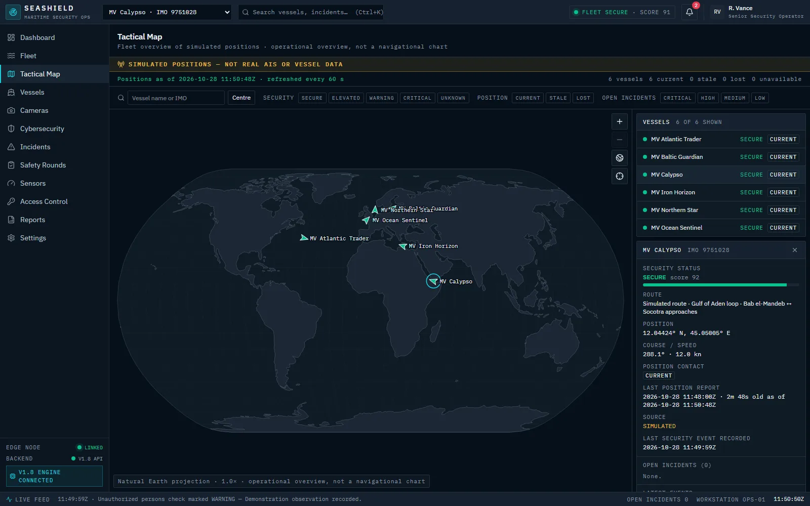
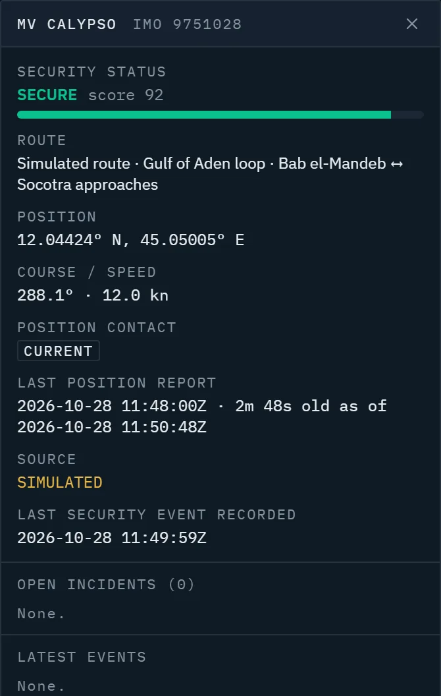

Where is the vessel, and how current is that?
A position is only useful if you know when it was reported and whether it is still current.
Maritime intelligence & operational security
A vessel-centric approach to maritime awareness and security operations, designed to bring fleet information and operational context into one place.

The challenge
Understanding what is happening on a vessel can mean piecing together information that lives in different places. SeaShield is being built to address that.
A position is only useful if you know when it was reported and whether it is still current.
Security events, onboard checks and incidents are often tracked separately from vessel status.
Without a shared view, prioritising a response means switching between systems and reconciling them by hand.
The approach
SeaShield organises information around each vessel, so an operator can move from the fleet overview to a single vessel's situation without changing tools.
The prototype today
The working prototype runs on simulated data. Here is what an operator can do in it today.

Each vessel's simulated position is drawn with its security status. Filter by status, position freshness or open incidents.
Position, course and speed, the time of the last report and how old it is, and the vessel's simulated route.
Positions are classified as current, stale or lost. If the data stops refreshing, the view says it is no longer live instead of showing old data as current.
Go from the map straight to the vessel page for its security status, events and incidents.
Capabilities
We separate the two clearly. Everything in the prototype runs on simulated or demo data.
Working features you can see in a demonstration.
Not connected today. Some appear in the prototype as illustrative screens with demo data.
Early access
We are speaking with maritime professionals to understand their operational challenges and invite suitable organisations to explore and test the SeaShield prototype.
FAQ
SeaShield is an early-stage maritime awareness and security operations product. It is currently a working prototype that brings vessel position context, security status and incidents into one vessel-centric view. It is not a live monitoring service.
Shipping companies, fleet and vessel operators, maritime security managers, and operations and risk teams who need a clearer view of vessel status and security context.
The tactical map with simulated positions and freshness classification, the selected-vessel context panel, vessel detail pages, rule-based security scoring, and the incident and safety-round workflows, all on simulated or demo data. See Capabilities for what is available and what is planned.
No. Vessel positions in the prototype are simulated, and the vessels are fictional demo data. The map shows a clear "simulated positions" notice and labels each position's source as simulated. Integration with real position sources such as AIS is planned but not yet built.
We are inviting maritime organisations to see a demonstration, share their workflows, and explore testing the prototype. Early-access requests are not open yet; the early-access form will accept them once it is connected.